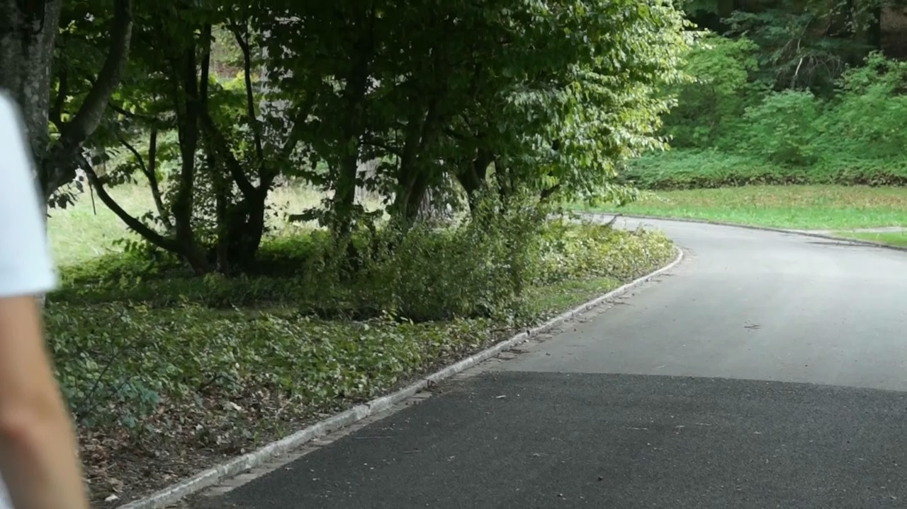

Gestaltung, die eine Reaktion will.
Marc Ingold, Mediamatiker EFZ in Ausbildung. Mich interessiert weniger, wie etwas aussieht – und mehr, was es bei dir macht. Bleibst du kurz hängen?
WeiterscrollenWer da spricht
Ich lerne schnell
noch lieber
verstehe ich
Eine kurze Beobachtung reicht mir oft, um zu merken, wie jemand gerade drauf ist. Dieses Gespür nehme ich mit, wenn ich gestalte.
Wenn mich etwas packt, bin ich schnell drin. Eine Kamera, ein neues Tool, ein Layout – ich probiere so lange, bis ich verstehe, wie man damit etwas erzeugt.
Am liebsten nicht allein. Aus mehreren Ideen im Austausch wird meistens die bessere – der Moment, in dem etwas Grösseres entsteht, ist mein Lieblingsteil.
Wohin das alles führt, weiss ich noch nicht. Solange ich Leute verstehen, Neues ausprobieren und etwas auslösen kann, passt die Richtung.
Zwei Minuten
Lieber einmal hören, wie ich denke, als es dreimal lesen.
Im Bewerbungsvideo erzähle ich, warum mich Menschen und Gestaltung gleichermassen beschäftigen – und wieso beides für mich zusammengehört.

BewerbungsvideoPortfolio
Elf Arbeiten aus fünf Bereichen – Web, Illustration, Layout, Fotografie und Branding. Auf ein Projekt tippen öffnet die ganze Ansicht mit Text und allen Bildern.
Web & Digital 01 – 02
Illustration 03 – 04
Layout & Editorial 05 – 06
Fotografie 07 – 08
Branding & Corporate Design 09 – 11
Projekt 01 — Web & Digital
ADONIS
Webdesign / Entwicklung
Als Erweiterung meiner selbst entwickelten Parfummarke ADONIS konzipierte und programmierte ich eine eigene Website. Dabei setzte ich das bestehende Branding in ein digitales Erscheinungsbild um und entwickelte die Website mit HTML, CSS und JavaScript. Das Projekt diente als Übung, um Gestaltung und technische Umsetzung miteinander zu verbinden.
Projekt 02 — Web & Digital
DJI
Übungswebsite / Web
Diese Website entstand als persönliches Übungsprojekt in meiner Freizeit. Anhand der Marke DJI entwickelte ich eine moderne Produktwebsite und setzte verschiedene Inhalte und Seitenelemente selbstständig um. Dabei konnte ich meine Kenntnisse in Webdesign und Webentwicklung weiter vertiefen. Die verwendeten Bilder und Markeninhalte stammen von DJI, weshalb die Website nicht veröffentlicht wurde.
Projekt 03 — Illustration
Polar Polo
Logo-Illustration / Grafik
Polar Polo ist ein eigenes Illustrationsprojekt, inspiriert von der Bildsprache von Polo Ralph Lauren. Die bekannte Reiterfigur interpretierte ich neu und entwickelte daraus eine winterliche Variante mit Hirsch und Eishockeyspieler. Im Fokus standen die Reduktion auf eine klare Schwarz-Weiss-Illustration und die Verbindung der unterschiedlichen Motive zu einem einheitlichen Logo.
Projekt 04 — Illustration
Swiss Fencing Clash
Sportplakat / Illustration
Im Rahmen eines Schulprojekts entwickelten wir zu zweit ein Sportplakat zum Thema Fechten. Mein Schwerpunkt lag auf der Illustration der Fechter, während mein Projektpartner das Konzept und die Dokumentation übernahm. Die Gestaltung des Hintergrunds sowie die Auswahl und Anordnung der Typografie erarbeiteten wir gemeinsam. So entstand das fiktive Eventplakat «Swiss Fencing Clash 2026» als Kombination aus Illustration und Grafikdesign.
Projekt 05 — Layout & Editorial
Coiffure Lab
Editorial Design / Layout
Für den fiktiven Kunden Coiffure Lab entwickelte ich ein mehrseitiges Editorial rund um Hairstyling und Fashion. Die Gestaltung war frei wählbar, wodurch ich ein eigenes visuelles Konzept mit Typografie, Bildern, Farben und Seitenraster entwickeln konnte. Ziel war es, die Inhalte übersichtlich aufzubauen und gleichzeitig einen hochwertigen, modischen Charakter zu vermitteln.
Projekt 06 — Layout & Editorial
Berner Stadtführung
Broschürendesign / Layout
Für eine fiktive Berner Stadtführung entwickelte ich eine mehrseitige Broschüre auf Basis eines bestehenden Styleguides. Dabei setzte ich vorgegebene Gestaltungselemente in ein eigenständiges Layout um und arbeitete gezielt mit Typografie, Raster, Bildern und Farben. Das Projekt zeigte mir, wie sich auch innerhalb klarer Designvorgaben kreative Lösungen entwickeln lassen.
Projekt 07 — Fotografie
Outdoor Lifestyle
Produkt- & Lifestylefotografie
Für ein Projekt im Betrieb inszenierten ein Kollege und ich einen hochwertigen Outdoorbrand in einer natürlichen Umgebung. Dabei entstanden sowohl Lifestyle- als auch Produktaufnahmen. Im Fokus standen die passende Bildkomposition, der Umgang mit natürlichem Licht und eine Bildsprache, welche das Produkt authentisch in einer Outdoor-Situation präsentiert.
Projekt 08 — Fotografie
Persönliche Fotografie
Freie Aufnahmen
In meiner Freizeit entstehen immer wieder eigene fotografische Aufnahmen aus meinem Alltag. Dabei achte ich besonders auf interessante Situationen, Bildkompositionen und das Zusammenspiel von Farben und Umgebung. Die freie Fotografie gibt mir die Möglichkeit, unterschiedliche Perspektiven auszuprobieren und meinen eigenen fotografischen Stil weiterzuentwickeln.
Projekt 09 — Branding & Corporate Design
ADONIS
Parfummarke / Branding
ADONIS entstand als umfassendes Brandingprojekt, bei dem ich eine eigene Marke von Grund auf entwickelte. Das Konzept basiert auf einer hochwertigen, aber zugänglichen Parfummarke, bei der Düfte individuell zusammengestellt werden können. Von der Markenidee über Logo und Styleguide bis zu Mockups und Website entwickelte ich einen zusammenhängenden visuellen Auftritt.
Projekt 10 — Branding & Corporate Design
Engadin Ultra Trail
Corporate Design / ÜK-Projekt
Im Rahmen eines ÜK-Projekts erarbeitete ich für den Engadin Ultra Trail verschiedene Kommunikationsmittel auf Basis eines einheitlichen visuellen Auftritts. Dazu gehörten die Überarbeitung des Logos, ein Styleguide sowie die Gestaltung von Plakat, Flyer und Broschüre inklusive Bildbearbeitung. Dadurch konnte ich üben, ein Corporate Design konsequent über verschiedene Medien hinweg anzuwenden.
Projekt 11 — Branding & Corporate Design
Marc M. Ingold
Personal Branding
Für meinen persönlichen Auftritt als Mediamatiker entwickelte ich ein eigenes Branding, das meine Werte, meine Persönlichkeit und meine gestalterische Richtung widerspiegelt. Daraus entstand ein einheitliches Erscheinungsbild, das unter anderem mein Logo, meine persönliche Website und mein Bewerbungsvideo umfasst. Das Branding bildet die visuelle Grundlage für meinen professionellen Auftritt und meine Bewerbungen.
Diese Website ist ein Teil davon.
Was ich kann
Vier Felder, in denen ich mich bewege. Manche sicher, manche neugierig.
Prozente sagen wenig. Aufklappen zeigt, womit ich arbeite und wo es schon drinsteckt.
Gestaltungsraster und Typo-Hierarchien, Reinzeichnung, Bild- und Logoentwicklung, Ausgabe für Print und Bildschirm.
Steckt drin: die Parfummarke ADONIS, das Corporate Design für den Engadin Ultra Trail, die Editorials für Coiffure Lab und die Berner Stadtführung.
Shootings planen, Bildbearbeitung, Schnitt, Farbkorrektur, Ton. Dazu erste Drohnenaufnahmen und Motion-Grundlagen.
Steckt drin: die Serie „Persönliche Fotografie“, die Outdoor-Lifestyle-Aufnahmen im Betrieb, dazu Auftragsschnitte und Drohnenaufnahmen.
Statische Websites von Hand, Prototypen in Figma, UX/UI-Grundlagen, responsives Layout und einfache Interaktionen.
Steckt drin: diese Website sowie die Websites für ADONIS und DJI aus dem Portfolio.
Saubere Dokumente, Präsentationen, Tabellen und einfache Datenbanken – der Teil, der im Alltag einfach sitzen muss.
Steckt drin: Schul- und Betriebsalltag, dazu ein Einblick in Buchhaltungsunterstützung.
Warum ich
Ich bin nicht der fertige Designer. Ich bin der, der schnell lernt und wissen will, was Gestaltung mit Leuten macht.
Wenn ihr jemanden sucht, der Technik mit Gestaltung verbindet, gern fragt und sich in Themen reinbeisst, bevor jemand danach fragt – dann sollten wir reden.
Nachricht schreiben